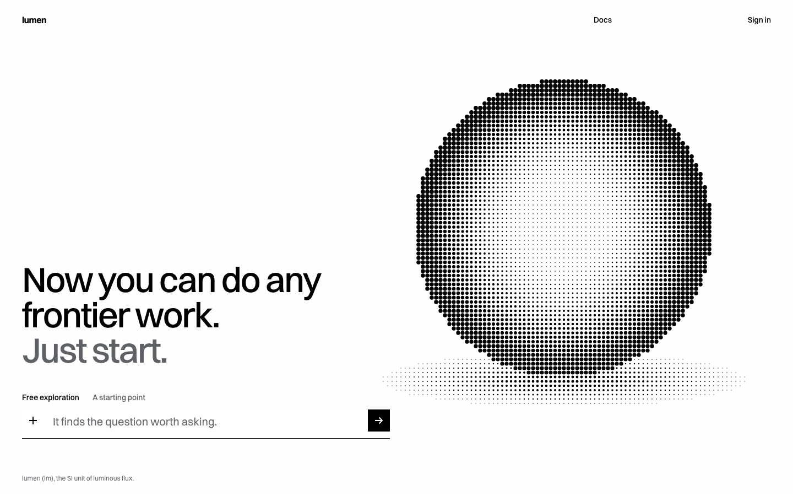
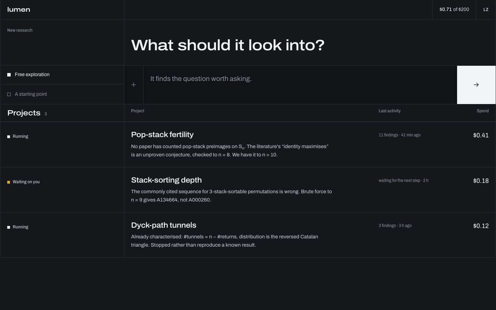
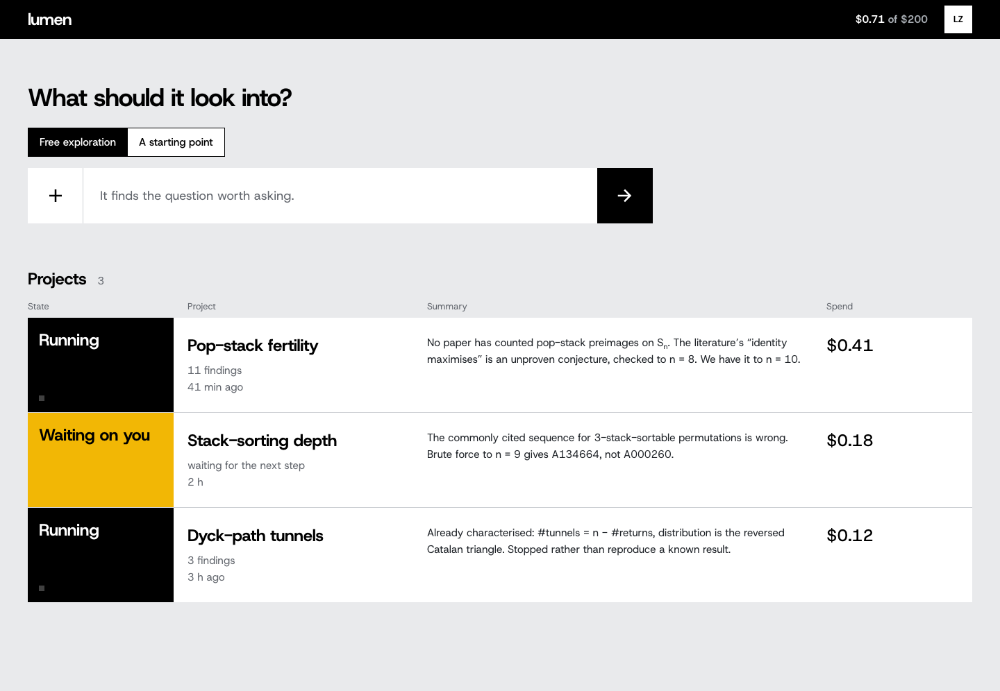

Three Swiss directions for lumen
Each direction keeps the screens and content of the annotated spec, and changes only the visual language. Each one has a landing page, home and session. Open a page and press G to see its grid.
Raster
Classical Swiss discipline with a fashion house's restraint. Every page is one screen. On landing, a halftone sphere is the image and the cursor is its light: a lumen is the unit of luminous flux. White paper, true black, and one Swiss red that appears only when a run needs you.

Instrument
The front panel of a lab instrument, in the dark. There is no accent colour: the primary action is an inverted key, and colour means only a run state. The grid shows as bordered cells. On landing, a call tree plays once and explains the product.

Signal
Swiss information design, read like transit signage. Light grey ground, white sheets, a black header band. State is a solid colour field: home reads like a departures board, and the call tree is a line diagram with stations.
